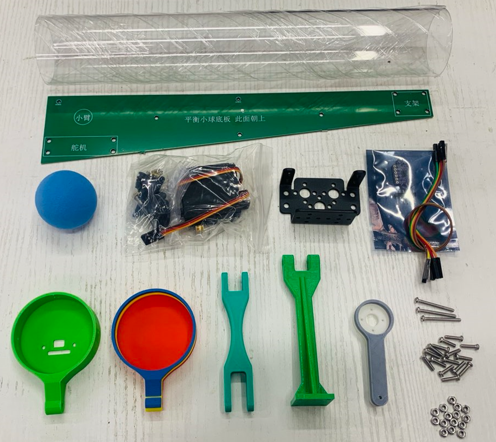
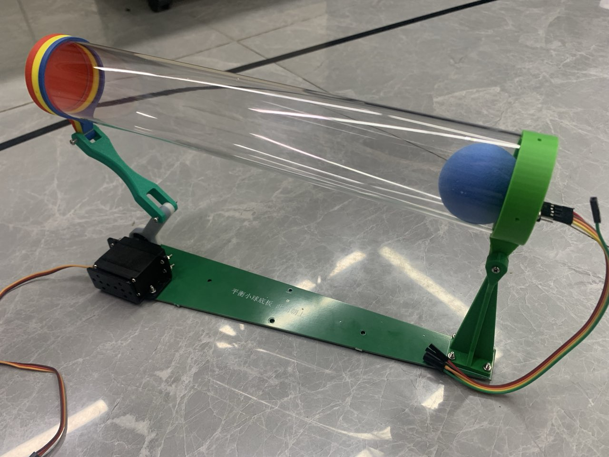
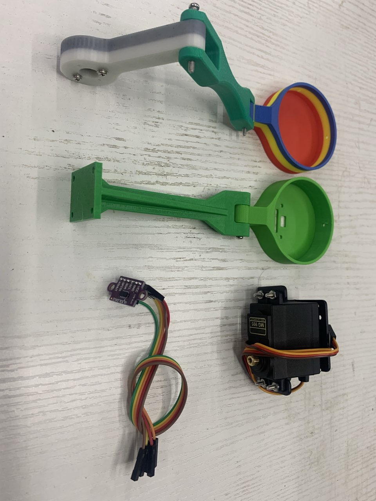
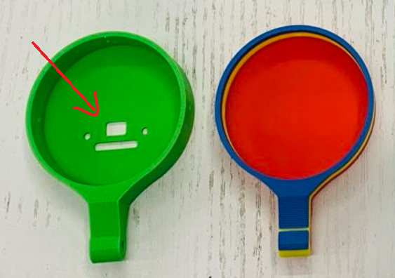
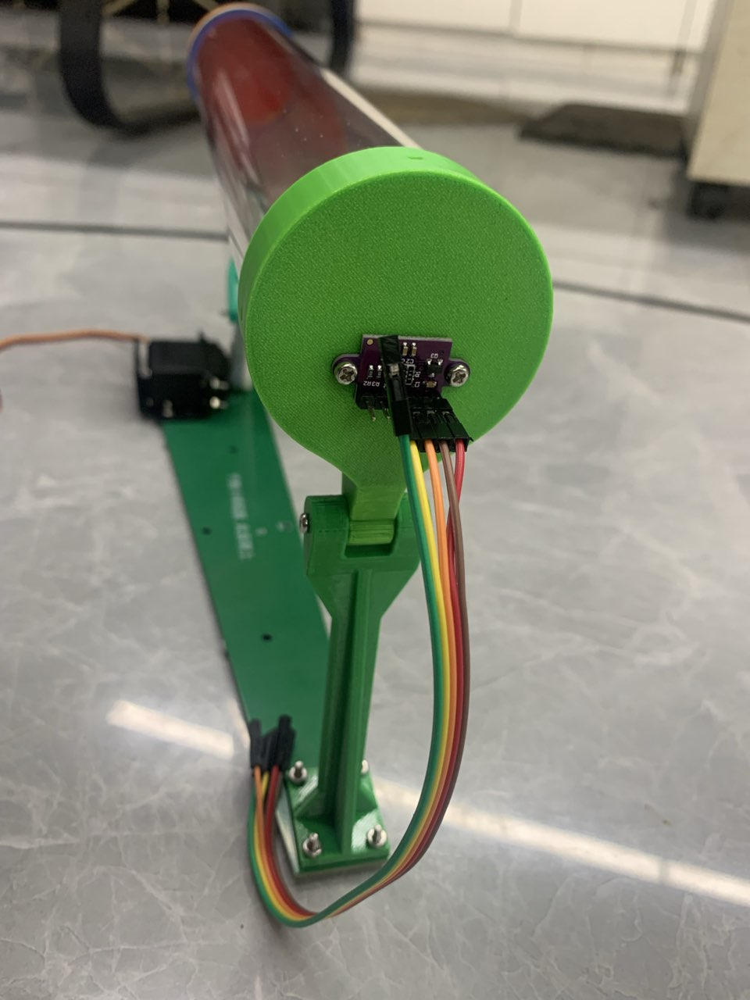

<!DOCTYPE lake>
<p data-lake-id="ud559f711" id="ud559f711"><span data-lake-id="u40279520" id="u40279520">PID闭环控制系统</span></p><h1 data-lake-id="wcIHp" id="wcIHp"><span data-lake-id="u65306dbb" id="u65306dbb">知识点</span></h1><ul list="u4a94aaf7"><li data-lake-id="u921fc8bd" fid="u354599f3" id="u921fc8bd"><span data-lake-id="uad64cbbf" id="uad64cbbf">代码在线Debug调试</span></li><li data-lake-id="u99effb14" fid="u354599f3" id="u99effb14"><span data-lake-id="ucda18a30" id="ucda18a30">Union联合体妙用</span></li><li data-lake-id="u36d05d3b" fid="u354599f3" id="u36d05d3b"><span data-lake-id="u59478995" id="u59478995">裸机多任务开发框架</span></li><li data-lake-id="u0c613d5f" fid="u354599f3" id="u0c613d5f"><span data-lake-id="u54f09fa4" id="u54f09fa4">结构体与函数指针</span></li><li data-lake-id="u6fb22b1d" fid="u354599f3" id="u6fb22b1d"><span data-lake-id="uad00016a" id="uad00016a">环形数据队列 </span></li><li data-lake-id="u44bd5eb7" fid="u354599f3" id="u44bd5eb7"><span data-lake-id="u9151d430" id="u9151d430">数据校验算法 ADD8, XOR8</span></li><li data-lake-id="uaeff0a30" fid="u354599f3" id="uaeff0a30"><span data-lake-id="u2f40537b" id="u2f40537b">PID算法</span></li><li data-lake-id="u6ec6b423" fid="u354599f3" id="u6ec6b423"><span data-lake-id="ua951e49e" id="ua951e49e">MG996R 舵机驱动</span></li><li data-lake-id="u8b2390ac" fid="u354599f3" id="u8b2390ac"><span data-lake-id="u243c1e54" id="u243c1e54">VL53L0X测距模块驱动</span></li></ul><h1 data-lake-id="x93lf" id="x93lf"><span data-lake-id="ud71c5107" id="ud71c5107">组装图</span></h1><h2 data-lake-id="Pqi2u" id="Pqi2u"><span data-lake-id="u997c1d4a" id="u997c1d4a">零件图</span></h2><ul list="u62034c10"><li data-lake-id="u148d56d9" fid="ud9630b26" id="u148d56d9"><span data-lake-id="ua08df181" id="ua08df181">长螺丝：3根</span></li><li data-lake-id="ubdbe918e" fid="ud9630b26" id="ubdbe918e"><span data-lake-id="uc151214a" id="uc151214a">短螺丝：15根</span></li><li data-lake-id="u2430c7fe" fid="ud9630b26" id="u2430c7fe"><span data-lake-id="ua5c022aa" id="ua5c022aa">螺母：15个</span></li><li data-lake-id="ua7e781fa" fid="ud9630b26" id="ua7e781fa"><span data-lake-id="uea7dec9c" id="uea7dec9c">3D打印件：5个</span></li><li data-lake-id="u62dd31f1" fid="ud9630b26" id="u62dd31f1"><span data-lake-id="ud76865b2" id="ud76865b2">小球</span></li><li data-lake-id="u95f81084" fid="ud9630b26" id="u95f81084"><span data-lake-id="u42579c57" id="u42579c57">舵机套装+舵机支架+公对母杜邦线3根</span></li><li data-lake-id="u0e70f1bf" fid="ud9630b26" id="u0e70f1bf"><span data-lake-id="u2d41d52a" id="u2d41d52a">测距模块+母对母杜邦线5根</span></li><li data-lake-id="u97e9e067" fid="ud9630b26" id="u97e9e067"><span data-lake-id="u58a8ff44" id="u58a8ff44">底板</span></li><li data-lake-id="u31c86d69" fid="ud9630b26" id="u31c86d69"><span data-lake-id="ud5ac2164" id="ud5ac2164">塑料管</span></li></ul><p data-lake-id="u940169af" id="u940169af"></p><h2 data-lake-id="aSZcV" id="aSZcV"><span data-lake-id="u0e3cd2c3" id="u0e3cd2c3">整体图</span></h2><p data-lake-id="ua45aa2fb" id="ua45aa2fb"></p><blockquote class="lake-alert lake-alert-color4" data-lake-id="uc61ba74d" id="uc61ba74d"><p data-lake-id="u18387049" id="u18387049"><span data-lake-id="u8e533372" id="u8e533372">先把舵机通过代码运动到90度，再垂直固定圆形法兰盘。否则可能在运动时会超出范围导致堵转。</span></p></blockquote><h2 data-lake-id="VI23c" id="VI23c"><span data-lake-id="u1d09b26f" id="u1d09b26f">组装模块</span></h2><p data-lake-id="u0afb82ef" id="u0afb82ef"></p><h2 data-lake-id="sMMZ7" id="sMMZ7"><span data-lake-id="uf39236f3" id="uf39236f3">测距端</span></h2><p data-lake-id="u6d4dcdda" id="u6d4dcdda"><span data-lake-id="u682aaf77" id="u682aaf77">有两个圆形螺丝孔和测距孔、排针孔。</span></p><p data-lake-id="uee82ad6d" id="uee82ad6d"></p><p data-lake-id="u84c78db6" id="u84c78db6"><span data-lake-id="ua1599c40" id="ua1599c40">排针要焊在外边，方便插线。</span></p><p data-lake-id="u5c13619b" id="u5c13619b"></p>